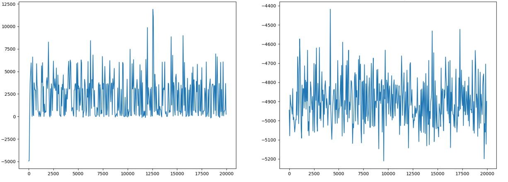
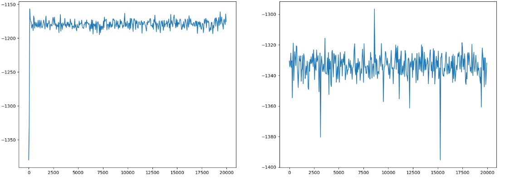

Implicit Q-learning
Offline RL involves learning from previously collected data without having access to environment interactions. Recall that an RL problem setting consists of a state space, action space, transition dynamics, and reward function. A policy determines what actions to take in a given state such that an objective, called the expected return, is maximised. Offline RL learns a policy from data collected by a behavioral policy. And, the goal is to enable some generalization in the new learnt policy while keeping it close to the behavioral policy for stable learning. This instability is caused by how the Q-value function is learned using TD targets.
$$ L(\theta) = \mathbb{E}_{(s, a, r, s’) \sim D} $$
$$ \left[ \left(\left( r + \gamma \max_{a’} Q_{\theta^{’}}(s’, a’) \right) - Q_\theta(s, a) \right)^2 \right] $$
Learning from targets that use action a’ that are not there in the dataset to learn from can lead to bootstrapping from inaccurate values. Some of the ways to deal with such ‘out-of-distribution’ action sampling is to sample in-distribution or regularize the Q-values to avoid such overestimation.
[1] proposes to avoid sampling out-of-distribution actions to learn using TD targets. The idea is to treat the value function as a random variable and learn an upper expectile of Q-values of state-action pairs within the dataset. A practical way to understand this is to see how we can modify the TD target to use only what we have in the dataset. Given a transition (s, a, s’), we can learn from a target as follows while avoiding sampling a’:
$$ L(\theta) = \mathbb{E}_{(s, a, r, s’) \sim D} $$
$$ \left[ \left(\left( r + \gamma V(s’) \right) - Q_\theta(s, a) \right)^2 \right] $$
As proposed in [1], V(s’) can be learnt using expectile regression. In expectile regression, the goal is to learn a parameter that minimizes the following objective:
$$ argmin_{m_\tau} \mathbb{E}_{x \sim X} $$
$$ \left[ L_\tau^2 (x - m_\tau) \right] $$
where : $$ L_\tau^2(u) = |\tau - \mathbf{1}(u < 0)| u^2 $$
Such an asymmetric loss function gives more weight to larger target values. The value function can be learned using :
$$ L_V(\psi) = \mathbb{E}_{(s, a) \sim D} $$
$$ L_\tau^2 \left[\hat{Q}_\theta(s, a) - V(s)\right] $$
Finally, a policy (parameterized here by phi) is learned using the advantage-weighted regressions using these value functions. As described in the paper [1], expectile regression can be directly used on the Q-value function. This is problematic because this random variable now has stochasticity from the next states due to transition dynamics. A larger target value can be attributed to a bad action in a good state rather than a good action in a given state. But learning the two value functions separately avoids this problem.
I coded this up and tested for two environments - AdroitHandPen-v1 and AdroitHandHammer-v1. The entire algorithm can be found in the paper and is explained in the tutorial [2]. Offline datasets made available from Minari are used for training.
Initialize the three networks:
class IQL(torch.nn.Module):
def __init__(self, value_net, qvalue_net, actor):
super().__init__()
self.device = torch.device('cuda' if torch.cuda.is_available() else 'cpu')
self.value_net = value_net.to(self.device)
self.qvalue_net = qvalue_net.to(self.device)
self.target_qvalue_net = copy.deepcopy(self.qvalue_net).to(self.device)
self.actor = actor.to(self.device)
Compute the Expectile Loss as follows :
qvalues = self.target_qvalue_net(torch.cat([obs,actions], dim=1))
values = self.value_net(obs)
tau = 0.7
u_value = (qvalues - values)
mul_val = torch.tensor([tau if u_value[x] > 0 else abs(tau - 1) for x in range(0, u_value.shape[0])], device=self.device)
loss_psi = torch.mean(torch.mul(mul_val, u_value**2), dim=0)
Compute the loss using TD targets:
nvalues = self.value_net(next_obs)
nvalues = reward + (1-done)*0.99*nvalues
t_qvalues = self.qvalue_net(torch.cat([obs,actions], dim=1))
loss_theta = torch.mean((nvalues - t_qvalues)**2, dim=0)
Compute loss for the policy :
samples, logprob = self.actor(obs)
loss_phi = torch.exp(0.05 * u_value)
loss_phi = torch.mul(loss_phi, logprob)
loss_phi = torch.mean(loss_phi, dim = 0)
Total loss to optimize the three networks with
total_loss = torch.sum(torch.stack([loss_psi, loss_theta, loss_phi]))
The following two images compare the performance of IQL with a random policy for the two tasks. The left graph is the IQL policy, and the right is a random policy. The plots show the average episode reward for 20 episodes.
Adroit Hand Pen

Adroit Hand Hammer
References
- Kostrikov, Ilya, Ashvin Nair, and Sergey Levine. “Offline reinforcement learning with implicit q-learning.”
- Implicit Q-Learning with TorchRL
Note : Feel free to reach out if you:
- Get stuck implementing the ideas discussed in this article or have any questions.